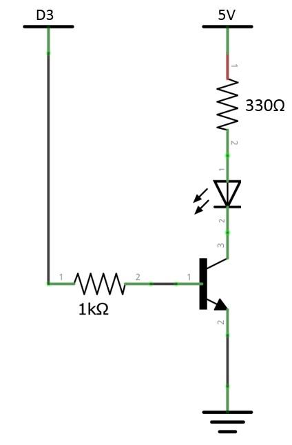
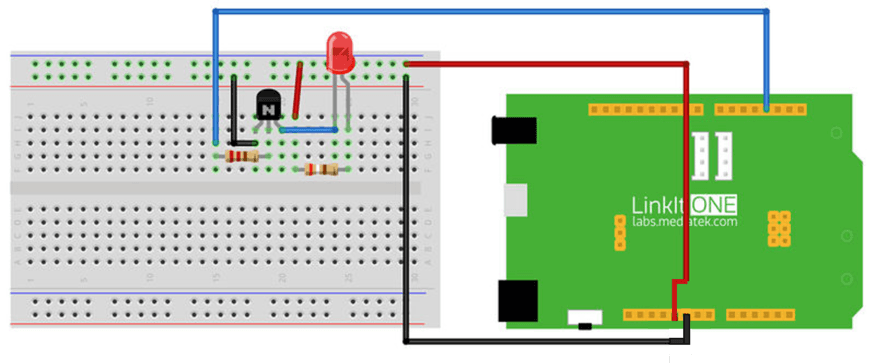

What We're Doing
In this section, we achieve some cool function. Outstanding characteristic of LinkIt One is integrated with the communication module. We are following through GSM communication module to transmit messages, the switch state to pass to change LED. This will be exciting. First connect with the antenna, and then insert a SIMCARD into the slot of the LinkIt One, then according to the schematic connected circuit. Use a mobile phone with GSM, edit the message content ON or OFF, send the specified number (the SIM number), now you can control the LED switch state, And global synchronization.
Things you need
Schematic

Connection

Code
Please click on the button below to download the code for the kit:

You can unzip the file to the Examples folder of your Arduino IDE.
To access the demo code open:
File -> Examples -> Starter Kit for LinkIt -> Basic -> L9_SMS_Light
Making it better
Perfect with the GSM module communication function. If we want to do a short time, how to modify the code? Set a time of 60 seconds (send form ON60). Send a message to set the lighting automatically extinguished in a minute after arrival.
To access the demo code open:
File -> Examples -> Starter Kit for LinkIt -> Extend_Lesson –> L10_SMS_Light_Advanced
More ideas
With Bluetooth, GPS, Wi-Fi function module. What a look whether to have the new play?
Reference